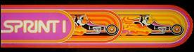

|
|
|
Norbert Kehrer, August 2015
| |
|
|
| |
|
|
|
|
|

|
|
Sprint 1 in JavaScript
Original game by Atari in 1978.
Exact port of the original to JavaScript
using the method of static binary translation
in August 2015 by Norbert Kehrer.
Read more about it on my homepage at
https://norbertkehrer.github.io
Keys to play:
| Left | Crsr Left or A
| Right | Crsr Right or D
| Shift Gear Up | Crsr Up or W
| Shift Gear Down | Crsr Down or S
| Accelerate | Ctrl or Space
| Insert Coin | 5
| Start Game | 1
| Pause Game | P
| | | | | | | |
|
|